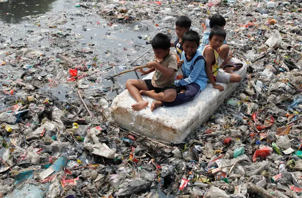

David
Smith
River at Ganges needs cleaning
I'm reaching out about a critical issue regarding our local river. The river at India is facing severe pollution caused by litter, notably due to pedestrian negligence along its banks. The accumulation of debris, especially plastic waste, poses a significant threat to the river's ecosystem and wildlife. This pollution not only harms our environment but also impacts the health and well-being of our community. Immediate action is needed to address this problem. We must urgently raise awareness among pedestrians about responsible waste disposal to prevent further harm to our river. Thank you for your attention to this pressing matter.
